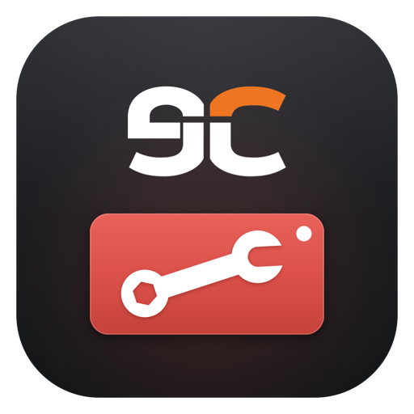

eCatholic · eCL
Configuration Tool
Finds the Magewell Ultra Stream and Pro Convert HDMI and SDI encoders on your network and shows each one’s IP address.
Opening it on a Mac
Safari unzips the download for you; in Chrome, double-click the zip in Downloads. Then open Configuration Tool — it’s signed and notarized by Apple. The first time you search, allow it to find devices on your local network.
Opening it on Windows
Open Configuration-Tool-Windows.exe from your Downloads. If Windows shows “Windows protected your PC”, click More info, then Run anyway. If your browser asks whether to keep the file, choose Keep.